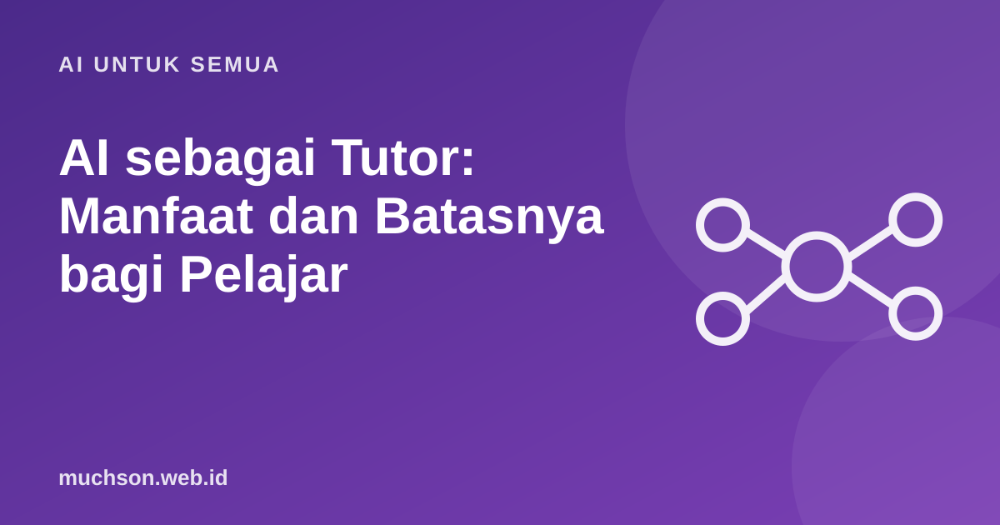

Beranda › Artikel › AI untuk Semua
AI untuk SemuaAI sebagai Tutor: Manfaat dan Batasnya bagi Pelajar
Benjamin Bloom pada 1984 menulis bahwa siswa yang belajar dengan tutor pribadi bisa jauh melampaui siswa di kelas biasa, dan menyebut tantangan menghadirkan manfaat itu untuk semua orang sebagai "masalah 2 sigma". Tutor AI sering dipromosikan sebagai jawabannya. Penelitian terbaru menunjukkan gambaran yang lebih bernuansa: AI bisa membantu belajar, atau justru menghambatnya, tergantung cara dipakai.

Studi penting: AI tanpa pagar bisa merugikan
Bastani dan rekan (PNAS, 2025) melakukan eksperimen dengan hampir seribu siswa SMA di Turki pada pelajaran matematika. Ada dua versi GPT-4: GPT Base yang mirip ChatGPT biasa, dan GPT Tutor yang diberi instruksi untuk membimbing, bukan memberi jawaban.
| Kelompok | Saat latihan (dengan AI) | Ujian tanpa AI |
|---|---|---|
| GPT Base | sekitar 48% lebih baik dari kontrol | sekitar 17% lebih buruk dari kontrol |
| GPT Tutor | sekitar 127% lebih baik dari kontrol | penurunan sebagian besar tercegah |
| Kontrol (tanpa AI) | acuan | acuan |
Kesimpulan peneliti: siswa memakai AI sebagai tongkat penyangga. Mereka terlihat pintar saat latihan, lalu kesulitan ketika harus mengerjakan sendiri. Pagar pengaman dalam desain tutor sebagian besar mencegah penurunan itu.
Kapan tutor AI membantu
Prompt tutor Sokratik yang bisa dipakai
Aturan sederhana untuk pelajar
- Coba dulu 10 menit sebelum bertanya ke AI.
- Minta petunjuk, bukan jawaban.
- Jelaskan balik ke AI dengan kata-kata sendiri, lalu minta dikoreksi.
- Uji diri tanpa AI secara berkala, misalnya kuis mingguan.
- Periksa fakta dan hitungan penting di sumber lain.
Rasa "saya paham" saat membaca penjelasan AI yang lancar sering menipu. Ukuran sebenarnya: bisakah Anda mengerjakan soal baru tanpa bantuan besok?
Tanya jawab
Apakah anak SD boleh memakai tutor AI?
Apakah AI bisa menggantikan guru?
AI mana yang paling bagus untuk belajar?
Sumber dan bacaan lanjut
- Bastani et al. (2025): Generative AI without guardrails can harm learning, PNAS
- Bloom (1984): The 2 Sigma Problem, Educational Researcher
- Active recall: teknik belajar paling efektif (artikel terkait)